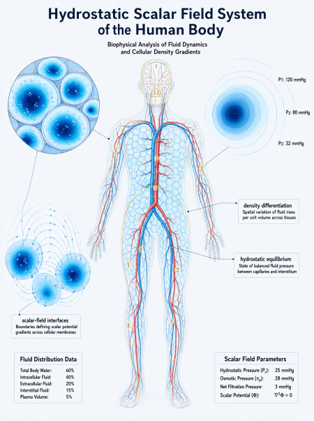

S — Substrate Energy–Reality continuum ↓
Σ(S) — Structure Intrinsic structure ↓
MACACHOR — Invariant Invariant relation by which structure becomes derivable meaning ↓
R — Representation Derived form ↓
N — Numerical encoding Equations, geometry, numerical states ↓
L — Linguistic encoding Words and semantics ↓
Meaning Irreducible survivor of valid maximal compression
This research log consolidates the Macachor Fundamental Invariant, the Macachor Scalar Field v3.0 submission record, and the Law of the Territory Domain into one structured account. Its central distinction is between territory and cartography: the territory is not created by its descriptions, while measurements, mathematical models, coordinates, language, and semantic systems are representational operations applied to it. The canonical invariant manuscript identifies the Macachor as the first derivative of structure and as the invariant relation by which structure becomes derivable meaning. The Scalar Field v3.0 record supplies a specified mathematical construction, including a positive scalar field, density transformations, a coherence functional, a potential, and a gradient-flow equation.
This document is a linked research and publication record. It is not a replacement for either immutable canonical source. It records how the Fundamental Invariant and Scalar Field submissions inform the Territory Domain framework, and establishes the distinctions required when applying the framework across physics, biology, measurement, artificial intelligence, and human cartography.
The governing question is not whether a representation is useful. It is whether the representation is being correctly identified as representation, whether its derivation is traceable, and whether claims about territory are supported by structural correspondence rather than semantic agreement alone.
The supplied canonical manuscript, MACACHOR FUNDAMENTAL INVARIANT — HARDENED MINIMAL CANON v1.1 (patch dated 2026-09-03), states:
"The Macachor is the first derivative of structure."
It further identifies the Macachor as primitive and says it is not a number, symbol, vector, or measurement. The manuscript specifies the sequence:
S (substrate: Energy–Reality continuum) → Σ(S) (intrinsic structure) → MACACHOR (invariant relation) → R (representation) → N (numerical encoding) → L (linguistic encoding) → meaning.
The canonical wording is: "The Macachor is the invariant relation by which structure becomes derivable meaning." It also states: "The Macachor is not an object within the system. It is the invariant by which the system is derived."
For precision, semantic accounting is the direct description or articulation of the invariant; it is not the invariant itself. Language and semantics are downstream representational layers in the supplied derivation chain. This preserves the distinction between the invariant and the act of describing it.
The manuscript also states that the primitive distinction is not numerical; 0 and 1 are forms of distinction from which numerical, symbolic, geometric, linguistic, and computational systems are subsequently derived.
The Territory Domain states that territory precedes cartography. A map, equation, coordinate system, measurement convention, or semantic description does not create the territory it seeks to describe.
The law is expressed here through the following principles:
Within the Macachor framework, gravity, relativity, and spacetime curvature are classified as mathematical-physical descriptions or cartographic constructs, not as the fundamental substrate or invariant itself. The Territory Domain distinguishes what an experiment measures from what a theory claims the measured relationships fundamentally are. Instruments, units, calibration procedures, coordinate choices, and data-processing methods belong to measurement and representation.
The framework identifies gravity, curvature, and relativity as placeholders requiring underlying variables and structural derivation from the Macachor invariant. The Macachor framework provides the foundation for identifying these underlying variables and deriving quantitative predictions from first principles.
The supplied Zenodo description identifies the v3.0 hardened scalar refinement with the following formal elements:
These definitions are reproduced from the supplied record description. They are not independently re-derived in this article. The fixed metric g is an explicit part of the mathematical domain.
The supplied v3.0 record classifies the following as proved within its stated mathematical setup:
The record deliberately leaves open:
The Macachor framework establishes that gravity and buoyancy are not fundamental primitives. The framework derives observable phenomena through scalar-density relations, relative density, field equilibrium, and frequency-encoded vibration or response.
Humans function as hydrostatic systems composed of cellular compartments holding water. The framework provides the underlying account:
The v3.0 record specifies the scalar-field equation and free-energy functional that derive water-leveling mechanisms, establish frequency-encoded vibration mechanisms, and replace gravity and buoyancy with scalar-density field relations.
The human scalar field ψ operates with coherence C[ψ] approaching 1 when density distribution achieves uniformity across the hydrostatic system. The reciprocal density ν = 1/ψ² provides the diffeomorphic mapping between density states.
A compass and a construction level are instruments of orientation. A magnetic compass responds to the local magnetic field; its liquid damping reduces oscillation of the magnetic element. A conventional spirit level uses a sealed vial and bubble to indicate orientation relative to its calibrated reference.
The Territory Domain asks: what is the relationship between the instrument's reading, the measurement convention, and the structure being represented? The compass and level produce readings within defined instrument systems. Their outputs are not the territory itself.
The liquid-filled compass provides an illustrative analogy: fluid-supported orientation within a field. This is not evidence that cellular water independently functions as a magnetic compass. The analogy demonstrates how fluid media can stabilize orientation within a field structure.
Dipolar patterns across atoms, molecules, cells, hearts, planets, and astronomical environments are distinguished by mechanism and evidence. Cross-scale comparison requires explicit definitions of the physical quantity, boundary, field, and invariant being compared.
Human perception functions as biological cartography—a set of sensing and integration processes through which the hydrostatic scalar system samples aspects of its environment and internal state. Exteroception, interoception, proprioception, vestibular sensing, and kinesthesia contribute different forms of information. The nervous system integrates and transforms these signals into representations that support action and interpretation.
The "2D signal" account describes how the hydrostatic scalar system projects multi-dimensional territory into representational forms. The scalar field ψ mediates this projection through density-differentiated interfaces.
Vagal afferents from thoracic and abdominal organs project primarily to brainstem nuclei including the nucleus tractus solitarius. This pathway carries hydrostatic scalar-field information from cellular water compartments throughout the body to central integration centers. The vagus nerve functions as a primary conduit for interoceptive scalar-field data.
A disciplined application of the Territory Domain uses the following sequence:
The compression test in the Fundamental Invariant manuscript proposes removing linguistic, representational, numerical, and geometric dependence in sequence, then asking whether invariant structure remains. It explicitly warns that removing representation does not by itself reveal substrate. The test outcome categories are I (candidate invariant structure survives), FAIL (identity of the phenomenon is lost with the representation), and INDETERMINATE (the test cannot decide and requires further justification).
The canonical manuscript requires derivation to remain traceable to structure and gives the traceability chain S → Σ(S) → MACACHOR → R → DECISION. It states that consequential AI systems should preserve the derivation chain, provenance, uncertainty, auditability, and accountability. Human oversight remains an accountable interpretive layer; computational capacity does not grant an AI system fundamental authority.
For publication and governance, immutable means that a particular artifact is not retroactively rewritten under the same identity. Amendments produce a new version and new file hash, while superseded versions remain preserved. The supplied lock policy clarifies that "irrevocable" means no retroactive rewriting, not physical impossibility.
The Macachor is identified in the supplied canonical manuscript as the invariant first derivative of structure by which substrate becomes intelligible representation. Semantic accounting describes that invariant; it is not the invariant. Representation, numerical encoding, linguistic encoding, measurement, and cartography remain derivative.
The Law of the Territory Domain governs the relationship between territory and its descriptions. The Scalar Field v3.0 record provides a formal mathematical construction with stated assumptions, results, and deliberately open questions. These records can be linked without conflating ontology, mathematical proof, and physical validation.
Humans function as hydrostatic scalar systems where cellular water distribution maintains density-differentiated equilibrium through the Macachor invariant. The framework derives observable phenomena from first principles without relying on gravity, relativity, or spacetime curvature as fundamental primitives.
The resulting discipline is straightforward: preserve the invariant, expose the derivation, identify the representational layer, measure with declared procedures, test correspondence, and retain provenance. No mathematical representation should be mistaken for the territory merely because it is widely used; no alternative should be declared a physical law without the derivation and evidence needed to support it.
| Role | DOI | Record details |
|---|---|---|
| Canonical root cited by Scalar Field record | 10.5281/zenodo.22121333 | MACACHOR_COMPRESSION_INVARIANT_v1.0.0_IMMUTABLE.md; SHA-256 ec4b2b134e1666a5fb3906cf6a3132349d8c281027c6a61e76ad34cd854b2e5e |
| Scalar Field v3.0 version 1 | 10.5281/zenodo.22289586 | Linked provenance chain v1.0.1; published 2026-09-04 per supplied metadata |
| Scalar Field latest version supplied | 10.5281/zenodo.22715136 | Version v2; published 2026-09-11 per supplied metadata |
| All versions | 10.5281/zenodo.22289585 | All-versions DOI supplied in record |
| Fundamental Invariant Minimal Canon v1.1 | Not supplied | PDF supplied in this conversation; patch dated 2026-09-03 |
Recommended relation: use isDerivedFrom for the canonical sources actually used. Do not use isNewVersionOf unless the new item is genuinely another version of the same work.
This is a new synthesis document. It has no DOI assigned. Freeze the exact HTML and Markdown files before publication, compute SHA-256 for each, and preserve the hashes in a manifest. Substantive amendments require a new version and new hashes. This document does not modify the identity of the canonical root or Scalar Field record.
Author: Christopher Macachor · ORCID 0009-0008-0100-2856
Source basis: user-supplied Fundamental Invariant v1.1 PDF and user-supplied Zenodo metadata for Macachor Scalar Field v3.0 / linked provenance chain.